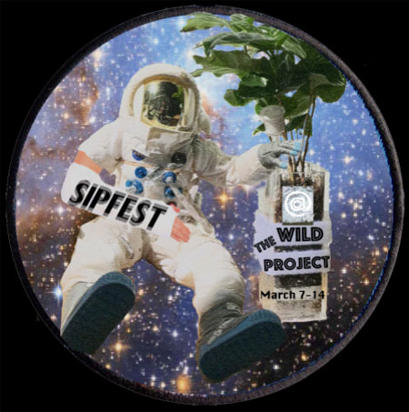

|
SipFest
SipFest, a new festival showcasing some of the coolest women theatremakers, has announced a lineup of multimedia works at different levels of development.
"When Spaceman was tragically postponed, we had this marvelous theatre that was going to sit empty for a few weeks. Taking a few hours to mourn, I immediately reached out to some of my favorite theatermakers and came up with a fierce lineup of groundbreaking women who will show deeply personal and totally fierce work.” said Loading Dock producer Charles Quittner. “Audiences will see readings, multimedia, puppetry, and of course a little drag."
SipFest features theatrical works by Cherry Lou Sy, Asia Gagnon and Max Bernstein, Sofya Levitsky Weitz and Sarah Blush, Maiko Kikuchi, Kat Yen and Christopher Audley Puglisi and additional artists to be announced.
March 7-15
Possessed is a Verb
March 7th @2pm, March 10 @ 9:30pm
By Cherry Lou Sy
What does it mean to be in control? How do you know that what you are experiencing is real? What does it mean to be you when you are channeling someone else’s words and experiences? Possessed is a Verb explores the ideas of spirit possession, ancestral lines, silence, trauma, ownership, authorship, appropriation and intertextuality through the lens of playwright Cherry Lou Sy’s childhood, young adulthood and the stories that she’s told.
15$
The Kind of Thing You Don’t Talk About
By Asia Gagnon
March 8th @ 2pm & 8pm
A hybrid between performance art piece and comedic storytelling , The Kind Of Thing You Don’t Talk About attempts to shape a new perception of survivors of sexual assault through live video and sound manipulation, mythological recreations, and personal anecdotes. Using hot dogs, green screens, altered biblical references, and more we will illuminate the humanity and strength in survival, and subvert the elements of shock and victimization that pervade the mediated representation of rape.
20$
Daydream Tutorial
By Maiko Kikuchi
March 9th @ 2, March 10th @ 8pm
How do you shape your face?
How do you pretend you are not home when your persistent neighbor at door?
Do you know how to make your clones?
First, try your way. If it doesn’t work, here is my way..
Daydream Tutorial is a unique object theatre piece consists of mask, collage animation and live performance. Stay for My Immortal... after the saturday performance!
15$
My Immortal: A Dramatic! !!! Reading xD
Adapted by Milo Jordan and Shannon Lippert
March 10th @ 9pm
A group of POSERS (actors) attempt to cash in on the amazing, perfect, 100% true (I was there) tragic tale of woe, and leather pants. Will Ebony Dark'ness Dementia Raven Way kill Vampire Potter before her beloved Draco is killed by......Voldemort(gasp)! No prepz allowed and ****NO FLAMES PLZ****
15$
The Two Sisters: or The Devil Beats His Wife
By Christopher Audley Puglisi
Directed by Kat Yen
March 11th at 7:30pm
In the summer of 1918, Antony returns from the war to his aunt and mother at their decaying estate by the sea — where something or someone is killing all the flowers in the garden. The Two Sisters is a contemporary queering of early twentieth-century anti-lynching plays, exploring gender performance, drag, ghosts, and the tension between artifice and the natural world. Recently developed by The Yale School of Drama, this workshop performance of The Two Sisters is Christopher Audley Puglisi’s New York City debut.
Suggested Donation: $10
this party sucks
By Sofya Levitsky-Weitz
Directed by Sarah Blush
March 13 @ 2pm
this party sucks examines the artist relationship through gender, competition, sexuality, and a trashed hotel room.
Suggested Donation: $10
Daphneitely Not Chris Tyler, Always [werking title]
an evening of drag with Daphne Always, Chris Tyler, and other queens TBA
March 13th @ 9:30pm
Do Not Obey in Advance
Emily Oliveira
March 14 @ 9:30pm
A short song cycle in conversation with Timothy Synder's On Tyranny: Twenty Lessons from the Twentieth Century. Do Not Obey in Advance is performed by a femme balladeer styled like a senator, manifesting a utopian idea of leader-cum-activist-artist.
Bios:
Cherry Lou Sy is currently a MFA Playwriting candidate at Brooklyn College with Mac Wellman and Erin Courtney. She wrote and directed a triptych piece on death and mourning with an Asian-American lens in #AmericaAF festival at the New Ohio Theater produced by Jessica Almasy and Ann Marie Dorr. Her work has been developed in La Mama Experiments, Rising Circle Theater Collective, The Letter of Marque, Brooklyn College and Primary Stages' ESPA. She was a finalist for the 2017 Bay Area Playwrights Festival and has been nominated for the 2018 Cherry Lane Mentor Project. She was also involved in Ping Chong’s Undesirable Elements series. Her essays have been published in HowlRound and the Latino Rebels’ Bolder Anthology.
Asia Gagnon received her BFA in Directing at Carnegie Mellon University School of Drama. She has interned and worked with companies including Mabou Mines, Elevator Repair Service and (most recently) The Wooster Group. Recent work in New York includes directing the season 2 premiere of Blank My Life (webseries), an original 10 minute play Heat Of The Moment (Tiny Rhino), and continued development of The Kind Of Thing You Don’t Talk About at Dixon Place, Irondale Center and The Performing Garage. She will be developing her next project, Feminists in the Woods through Loading Dock’s Forklift program.
Maiko Kikuchi
Maiko Kikuchi has an extensive multi-faceted professional experience in the areas of Illustration, painting, drawing, collages, sculpture, animation and puppetry/performance. Her self direction object theatre piece has shown at many theaters in NYC. “ON The Other Side Of The Fence” at Dixon Place in 2017,”PINK BUNNY” at Japan Society in 2016, “No Need For A Night Light On A Light Night Like Tonight” at LaMaMa in 2015, “PINK BUNNY” at St. Ann’s Warehouse in 2014, “Daydream Anthology” at St. Ann’s house in 2013. She also directed/performed in a performance company, Brooklyn Touring Outfit’s recent show “Co.Incident” at JACK in 2017, performed as a puppeteer in both Theodora Skipitares’s performance show ”Six Characters” at La MaMa Ellen Stewart Theatre in 2016 and in “The Chairs” at Whitney Museum in 2013. As a visual artist, Kikuchi participated in Group exhibition“In Time/Out of Place” at parasol project in 2017, “Crown Heights Film Festival” at FiveMyles Gallery in 2017, Group exhibition “Unwritten Stories” at HERE art Center in 2017 and her art works are commissioned to some online art galleries such asTuuum,The Art Mint and Walls Tokyo. Kikuchi is currently artist in residency at HERE art center.
Sarah Blush is a director of theatre and virtual reality. She is the co-artistic director of the theatre company TV, with whom she’s co-created and directed one world premiere per year since 2015: My Favorite Character Was the Talking Vase (HERE), Power Couple (Ars Nova), Sehnsucht (JACK). Sarah has developed new plays with Clubbed Thumb, Playwrights Realm, NYU Graduate Acting, NYU Abu Dhabi, The Atlantic Acting School, The Flea, Dixon Place, and Williamstown Theatre Festival. Associate/assistant directing: Daniel Aukin, Mark Wing-Davey, Rachel Chavkin, Young Jean Lee, Richard Nelson, Lisa Peterson, among others. Sarah is the recipient of New York Society Library’s Emerging Female Artist Grant and The Habitat Directing Fellowship, was a semifinalist for the Julie Taymor World Theater Fellowship, and is a New Georges Affiliated Artist. Upcoming: associste directing Mona Mansour’s The Vagrant Trilogy at Mosaic Theater Company in D.C; co-directing CAVE, a multi-viewer animated virtual reality experience premiering at SIGGRAPH in August; remounting Sehnsucht at JACK in August.
Sofya is a member of EST/Youngblood and has developed work with EST, the Brick, Williamstown, the cell, JACK, BAC, Barn Arts Collective, The Hearth, the Araca Group, the Tank, Hearth Gods, Dixon Place, the Flea, Steep Theatre, Chicago Dramatists, and more. Commissions from the Sloan Foundation, Steep Theatre, The Motor Company and Chinatown Soup. Residencies through Barn Arts, Chinatown Soup, and the Hearth. Semi-finalist for The Playwrights Realm Writing Fellowship and Princess Grace Award. Finalist for Actor’s Theatre of Louisville’s Heideman Award and published (twice) in The Dionysian. She’ll was chosen for UCF’s inaugural Pegasus PlayLab this spring and is a current finalist for Playwrights Center Core Apprenticeship. She serves as the official annual judge for Hendrix College’s playwriting competition. She got her MFA in Writing for the Screen & Stage at Northwestern University and teaches writing at St. John’s University. www.sofyaweitz.com
Christopher Audley Puglisi is a poet and playwright currently based in New Haven, CT. His full-length plays include Blood like Water, Degenerates, A Thousand Fireflies, and Deep Threads. He is a 2015 VONA/Voices Playwriting Fellow as well as a 2016 Lambda Literary Playwriting Fellow. He received a BA in Africana Studies from Oberlin College and is currently an MFA candidate at the Yale School of Drama.
Kat Yen is a director, set designer and producer, born and raised in NYC. She has directed at NYTW, Cherry Lane, Alvin Ailey, New Group, EST, Signature Theatre, Bushwick Starr, JACK, New Ohio, INTAR, Harvard/A.R.T., The Flea, Wild Project, HERE Arts, Atlantic Stage 2, Primary Stages, Poetic Theater Productions, Rising Circle, Yangtze Repertory, Cherry Lane, LAByrinth Theater, Horse Trade, C.O.W., American Theatre of Actors, Theaterlab, Gene Frankel, June Havoc, Columbia Univeristy, N.Y.U. and TFNC amongst others. She was the 2016-17 Van Lier Directing Fellow at Second Stage, a member of New Georges Jam, an alumnus of Lincoln Center Directors Lab, a former Resident Director at The Flea Theater, and the former Co-Artistic Director of Spookfish Theatre Company. She is currently an M.F.A. Directing candidate at Yale School of Drama. www.katyen.com
Charles is a Brooklyn-based shuga pie from Miami, Florida facilitating theatre as a director and producer. He’s brought to life dozens of explorations of classics and new works with a focus on queer visibility, organic melodrama, and ensemble story magic. His directing credits include Toxic if Swallowed by Chris Tyler (Ars Nova; Irondale; AmericaAF; The LGBT Center), It’s Cymbeline (The Brick), Everyday Afroplay by Daaimah Mubashshir (JACK), Bottom of the Scrum by John Budge (Dixon Place), & Charmander the Stray by Dan Giles (JACK; upcoming Exponential Festival). Charles is a 2018 Drama League Resident Artist. As a creative producer, he founded Envelope Ensemble for exploring Tragedy in Bushwick, & is the program director for The Loading Dock’s Forklift program for new play development.
|